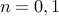

The class meets Thursdays 7:00-8:30 pm in 420-050.
Instructor: Jaehyun Park
Stanford ACM-ICPC Coaches: Jaehyun Park, Andy Nguyen, Jeffrey Wang, Sonny Chan, Jerry Cain
Announcements:
3/13/2012: Check out the new grading policy.
String Algorithms (Additional material: Suffix Arrays - A Programming Contest Approach)
To pass the course, you have to do either one of the following:
Participate in 4 or more weekly practice contests.
Solve a required number of Online Judge problems from the list below.
You can disregard the rest of this section if you decide to come to the practice contests.
All the problems below are from Peking Online Judge (POJ). Submissions should be made directly to the automated judging system.
Problems are classified into 10 different categories, and the lectures will cover essential algorithms and theoretical background for each particular category.
The numbers in parentheses represent the difficulty of the problems (0: easiest, 10: hardest). The difficulty rating is subjective; you might find a 5-rated problem easier than a 4-rated one. But do not attempt the challenge problems unless you are sure that you can solve all the easier ones. Note that you do not need to solve all the problems. You only need to solve at least 3 problems from at least 7 out of 10 categories, and 25 problems in total by the end of the quarter (March 23rd).
Using 32-bit integers instead of 64-bit ones
Using out-of-bound array indices
Using a semicolon after a for loop
for(i = 0; i < n; i++); some code
Reusing the same variable in nested for loops
for(i = 0; i < 1000; i++)
for(i = 0; i < 10; i++)
some code
Not using break in a switch-case statement (just don't use switch-case statements for programming contests)
Not taking (very) small cases into account (e.g. )
Writing arr[j][i] instead of arr[i][j], and similar errors
Writing a given constant incorrectly (e.g. taking modulo 12345789 instead of 123456789)
Bad parentheses in macro definition
#define min(a, b) a<b?a:b // incorrect #define min(a, b) (((a)<(b))?(a):(b)) // correct
Writing cos(180) instead of cos(pi)
First, remember that you are not stuck unless you have spent more than a day on a single problem. It is perfectly normal to spend many hours on just coming up with the right algorithm.
Read the problem statement again. You might have missed something very important.
Carefully go through the lecture slides. Think about how to apply the basic algorithms covered in class to the problem.
Discuss the problem with friends. Working in teams of size 2 or 3 is strongly recommended. As long as you don't copy-paste someone else's codes blindly, you can even share your (possibly buggy) codes.
Use the discussion board effectively.
If an enough number of you complain about a single problem, the coaches will give you some hints. :-)